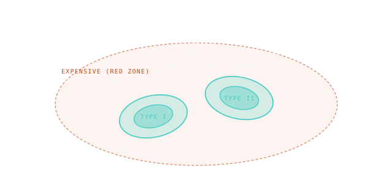

Reading the Contours
The shape of the cheap zone tells you the geometry of viable trajectories — and where the trade-offs live.

101 · zoom in
Now you know the axes and the colour scale. The next skill is reading the SHAPE of the cheap zone. The lobe of teal isn't just a generic blob — it's a literal map of which trajectories work and which don't.
The classic Mars porkchop has TWO cheap lobes per launch window, side by side. They're called the "Type I" and "Type II" trajectories — same window, two different ways around the Sun. Type I goes the short way (transfer angle below 180 degrees) and is faster. Type II goes the long way (transfer angle above 180 degrees) and is slower but sometimes cheaper. Both are real, both are flown.
Outside the lobes: red. Most of the porkchop is red, actually. That's the lesson. There are very few cheap moments to launch a spacecraft to another planet, and they're not negotiable. "Just wait for the right window" almost always beats "invent a clever trajectory." Reading the shape of the lobe — where it widens, where it narrows, where the optima sit — is what flight dynamicists do for a living.
Look at a Mars porkchop. You'll see a roughly oval lobe of teal cells centred near a 250-day TOF, recurring every 26 months. That's the Hohmann opportunity. Inside the lobe, all combinations of (departure, TOF) deliver feasible Mars missions at acceptable ∆v.
Two solutions per window. The 'short way' (transfer angle < 180°) and the 'long way' (transfer angle > 180°) both connect Earth to Mars but via different ellipses. They appear as two parallel cheap bands in the porkchop — sometimes both appear, sometimes only one, depending on geometry.
Outside the cheap lobes: red. Far from any natural window, you'd need a custom high-energy trajectory (gravity assist, multi-burn) to make the math work. Real missions cluster in the cheap zones; design philosophy 'just wait for the right window' often beats 'invent a clever trajectory.'
SEE IN THE APP
- /plan Contour lobes on the porkchop reveal the optimum-launch geometry